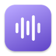

⌃⌥Space
Start with a shortcut
Place your cursor in a text field. Press Control, Option and Space to start dictating, or configure a hold-to-talk key.

KeydownOffline dictation for Mac
Hold a key, speak a thought, and let Keydown type it into the app you’re using. Your audio stays on your Mac.
Download for MacFree beta · Apple silicon · macOS 26+ · 1.30 GB
First time opening the beta?Place your cursor in a text field. Press Control, Option and Space to start dictating, or configure a hold-to-talk key.
The waveform follows your voice. English speech recognition and punctuation run locally, even with Wi-Fi off.
Finish dictating and your words appear at the cursor. Your clipboard stays yours. Choose Copy whenever you need it.
Setup and privacy for the Mac beta.
This English beta is built for Apple silicon Macs running macOS 26 or later. It has been tested on an M5 MacBook Air. Both the speech and editing models are included in the 1.30 GB download.
Open the disk image and drag Keydown into Applications. Open it from there. This beta uses a local signature and hasn’t been notarized by Apple. If macOS blocks the first launch because it can’t verify the developer, review Apple’s instructions before deciding whether to approve this copy. Apple’s first-open guide
Allow Microphone to dictate. Try a sentence in Practice Dictation. Accessibility lets Keydown insert text in other apps. Input Monitoring enables hold-to-talk and helps verify that focus stayed in the original field.
Recording retention is off by default. Transcript history is saved on this Mac until you delete it or change retention in Settings. The app requires no account and includes no telemetry.
This website uses GoatCounter to estimate visits and count download-button clicks. These measurements cover the website only.